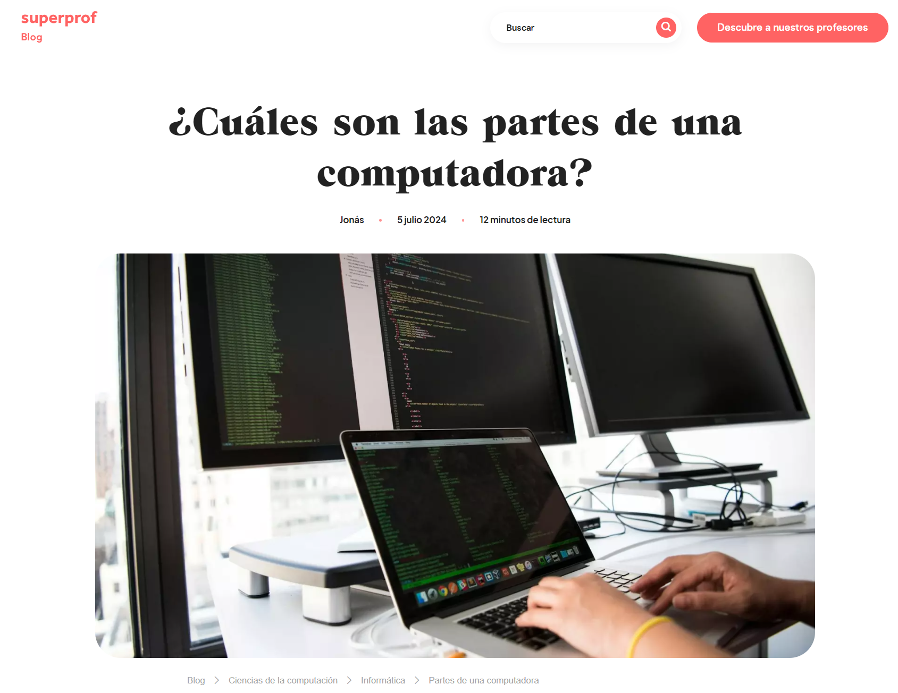
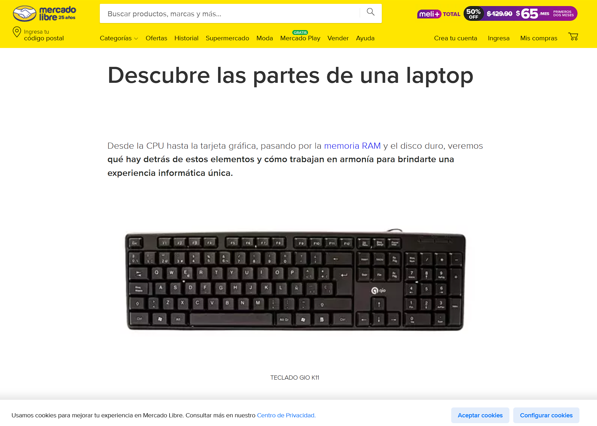
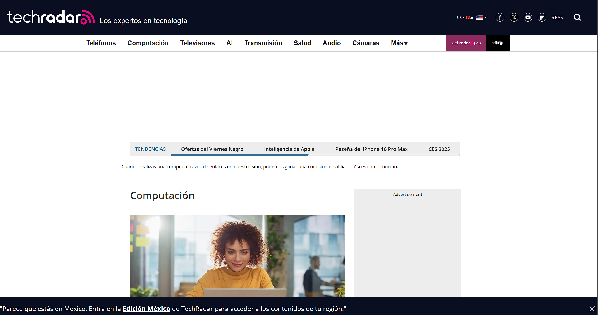
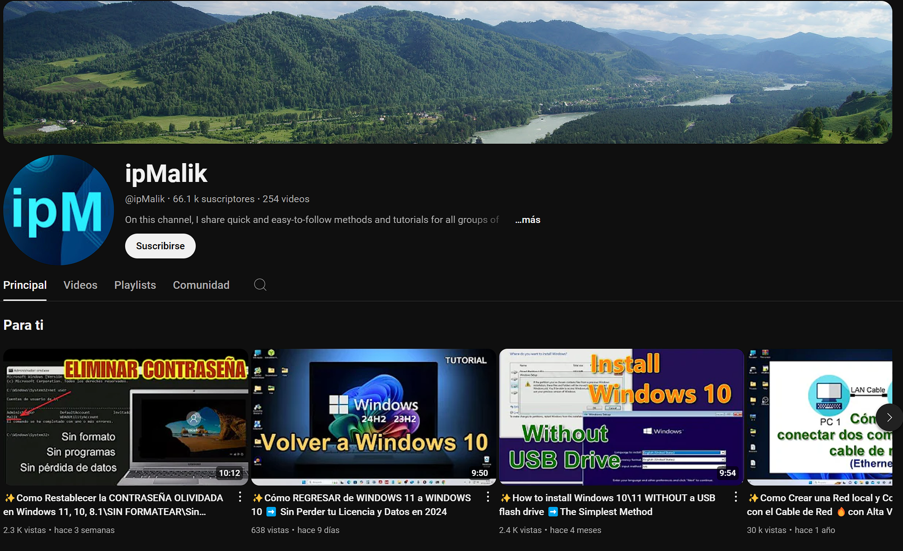
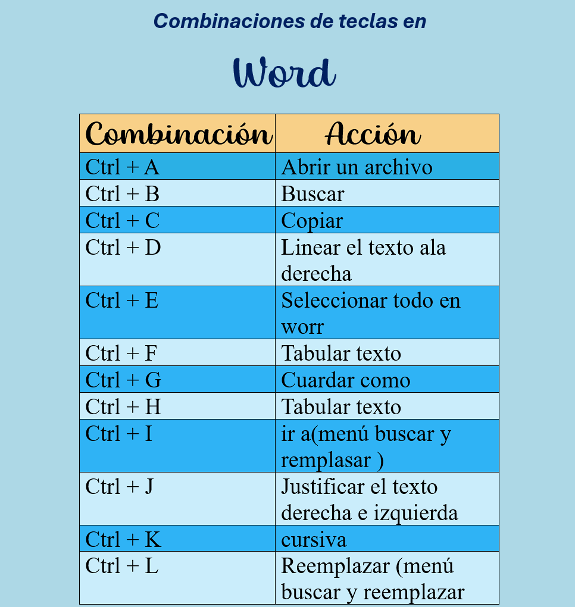
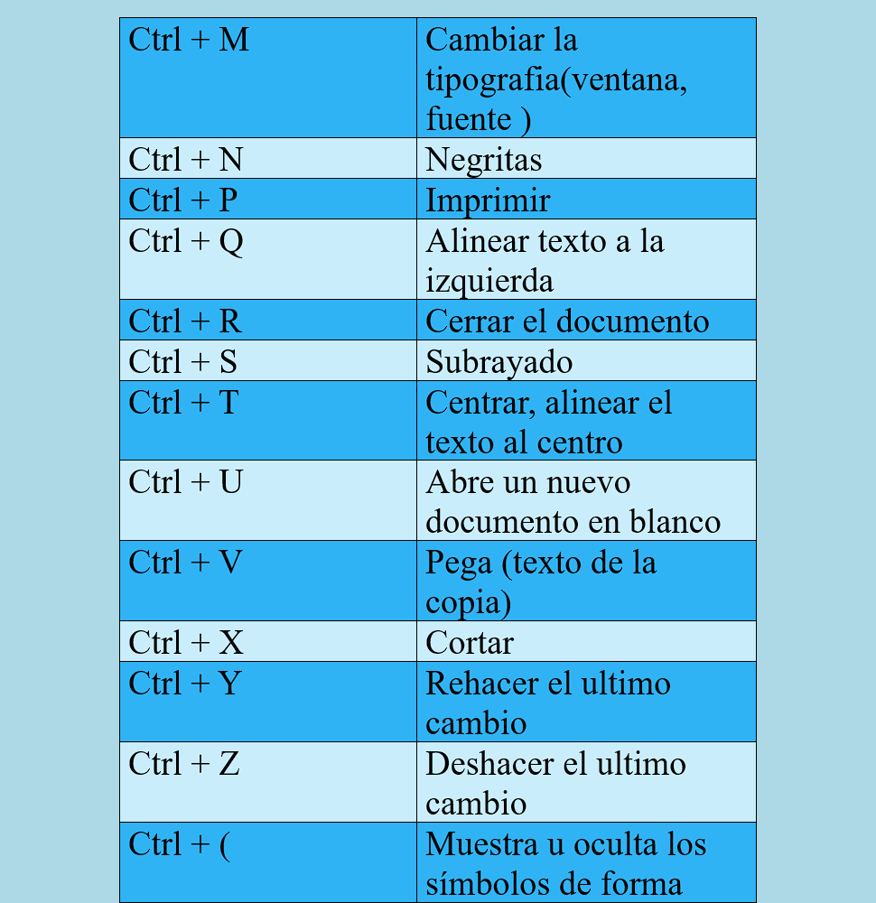
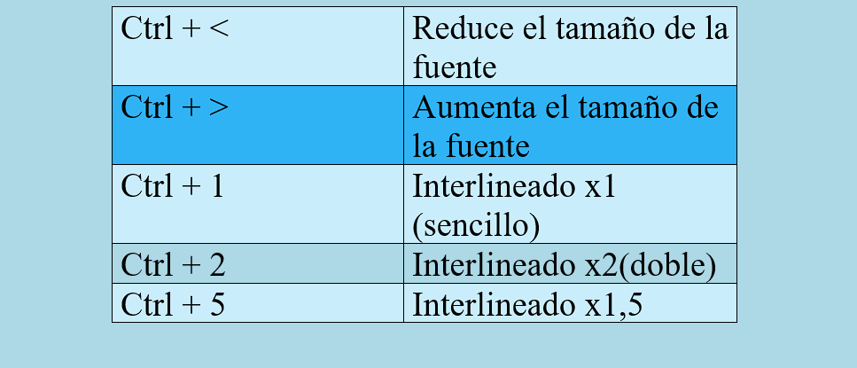

Otros Recursos
Páginas web recomendadas:
Enlace
Descripción
Vista previa
Componentes de una computadora
Explicacción de los componentes de una computadora, tanto el hardware como el software.
Partes de una computadora PC
Explicacción de los componentes de una computadora, tanto el hardware como el software.

Partes de una Laptop
Explicacción de los componentes de una computadora, tanto el hardware como el software.

Análisis y comparación de computadoras
Explicacción de los componentes de una computadora, tanto el hardware como el software.
Noticias, reseñas y guias para la compra de hardware
Explicacción de los componentes de una computadora, tanto el hardware como el software.

Canales de YouTube recomendados:
Enlace
Descripción
Vista previa
Reparación de computadoras
Explicacción de los componentes de una computadora, tanto el hardware como el software.
Proto
Explicacción de los componentes de una computadora, tanto el hardware como el software.
iPmalik
Explicacción de los componentes de una computadora, tanto el hardware como el software.



